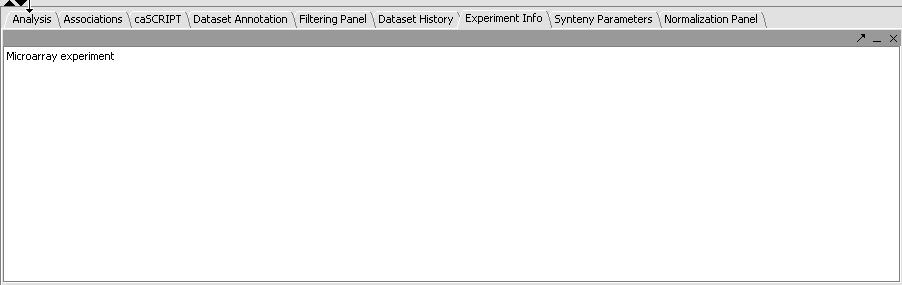

The Experiment Info panel is located in the Command and Analysis Area (see picture below). This non-editable component allows for viewing experiment information associated with a Microarray dataset. What constitutes "experiment information" varies depending on the input source where the microarray set came from. E.g., for Affy input files it is the file preamble (the part just before the data lines which provides various experiment execution parameters) that becomes the experiment information.
